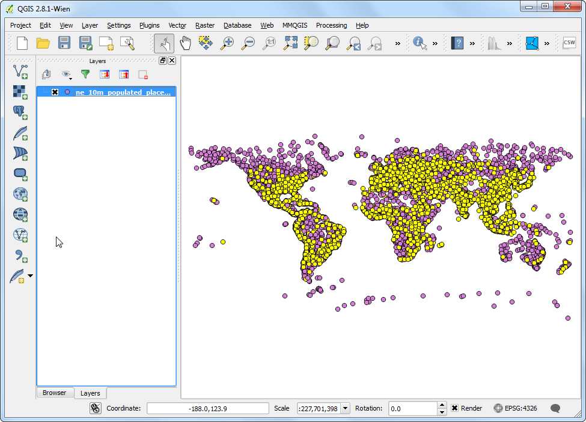
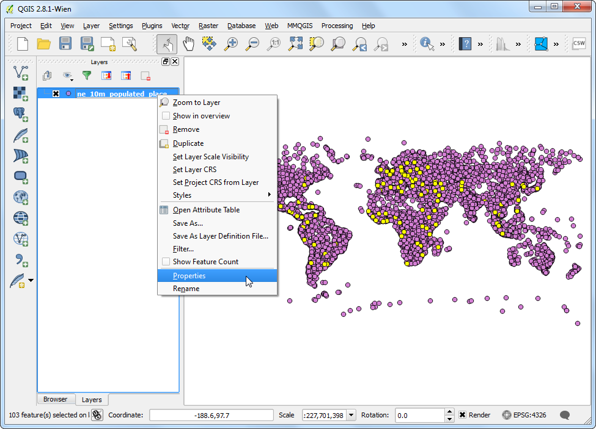
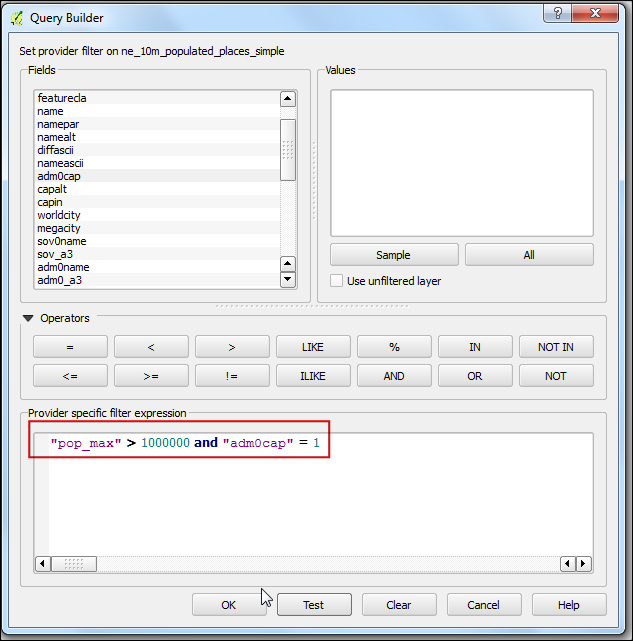

Bekerja dengan Attribut
[ Download PDF
A4
Letter ]
Data gis mempunyai dua bagian - fitur dan attribut. Atributt adalah data terstruktur mengenai setiap fitur. Tutorial ini menunjukkan bagaimana memperlihatkan attribut dan melakukan query standard pada attribut di QGIS.
Tinjauan Tugas
Dataset untuk tutorial ini mengandung informasi tentang tempat padat penduduk di Dunia. Tugas kali ini adalah membuat query dan menemukan semua ibu kota negara di dunia yang mempunyai jumlah penduduk lebih dari 1,000,000 .
Skill lain yang akan anda pelajari
Pilih fitur dari sebuah layer dengan memakai ekpresi.
Batalkan pilihan fitur dari sebuah layer menggunakan Attributes toolbar.
Menggunakan Query Builder untuk menunjukkan sebuah subset fitur dari sebuah layer.
Prosedur
Ketika anda sudah mengunduh data, buka QGIS, akses .

Klik Browse dan navigasi ke folder di mana anda unduhan data anda berada

Cari lokasi file zip yang sudah diunduh ne_10m_populated_places_simple.zip . Anda tidak diharuskan untuk mengunzip file. QGIS mampu untuk membaca file zip secara langsung. Pilih file tersebut dan klik Open.

Layer yang telah terpilih sekarang terbuka di QGIS dan anda akan melihat banyak poin merepresentasikan tempat-tempat padat penduduk di dunia.

Klik kanan pada layer dan pilih Open Attribute Table.

Eksplor attribut yang bermacam-macam serti nilainya.

Kita tertarik dengan populasi di tiap fitur, jadi pop_max adalah kolom yang kita cari. Anda dapat mengklik header kolom untuk mengurutkan dari yang paling akhir atau besar.

Sekarang kita sudah siap untuk melakukan query terhadap attribut-attribut ini. QGIS menggunakan ekpresi seperti SQL untuk melakukan queries. Klik Select features using an expression.

Pada jendela Select By Expression , telusuri lebih jauh bagian Fields and Values dan double-klik label pop_max . Anda akan melihat bahwa ini ditambahkan ke bagian ekspresi di bawah. Juka adnda tidak yakin mengenai nilai field, anda dapat mengklik Load all unique values untuk melihat nilai attribut apa yang tersaji di dataset. Untuk latihan, kita mencoba untuk menemukan semua fitur yang mempunyai populasi lebih dari 1,000,000. Jadi lengkapilah ekspresi seperti di bawah dan klik Select.

Klik Close dan kembali ke jendela utama QGIS. Anda akan melihat bahwa sebuah subset dari poin-poin sekarang terender dalam warna kuning. Ini adalah hasi dari query kita dan anda melihat tempat-tempat dari dataset yang memmpunyai nilai attribut pop_max lebih dari 1,000,000.

Tujuan dari latihan ini untuk menemukan tempat-tempat yang menjadi ibu kota negara. Field yang mengandung data ini adalah adm0cap . Nilai 1 mengindikasikan bahwa tempat itu adalah ibukota. Kita dapat menambah kriteria pada ekspressi sebelumnya dengan menggunakan operator and. Mari kita bentuk query kita untuk memilih hanya tempat-tempat tersebutlah yang merupakan ibukota. Klik tombol Select feature using an expression pada tabel attribut dan masukkan ekpresi di bawah dan klik Select dan kemudian Close.
"pop_max" > 1000000 and "adm0cap" = 1

Kembali ke jendela utama QGIS. Sekarang anda akan melihat sebuah subset poin-poin terpilih yang lebih kecil. Ini adalah hasil dari query kedua dan menunjukkan semua tempat dari dataset yang menjadi ibukota dan juga memiliki penduduk berjumlah lebih dari 1,000,000. Jika kita ingin melakukan analisa lebih jauh pada subset data ini, kita dapat membuat seleksi ini tetap. Klik kanan pada layer ne_10m_populated_places_simple dan pilih Properties.

Pada tab General, scroll ke bawah sampai bagian Feature subset. Klik Query Builder.

Masukkan ekpresi yang sama seperti yang sudah anda lakukan sebelumnya dan klik OK.
"pop_max" > 1000000 and "adm0cap" = 1

Kembali ke jendela utama QGIS, anda akan melihat sisa poin-poin menghilang. Sekarang anda mungkin melakukan analisa lain pada layer ini dan hanya fitur yang cocok dengan ekspresi kita ini yang akan digunakan. Anda akan melihat bahwa poin-poin masih muncul dengan warna kuning. Ini dikarenakan poin-poin ini masih terpilih atau selected . Temukan tombol Deselect Features from All Layers di toolbar Attributes dan klik tombol tersebut.

Anda akan melihat poin-poin tadi sekarang batal dipilih atau di-deseleksi dan terender pada warna asli mereka.